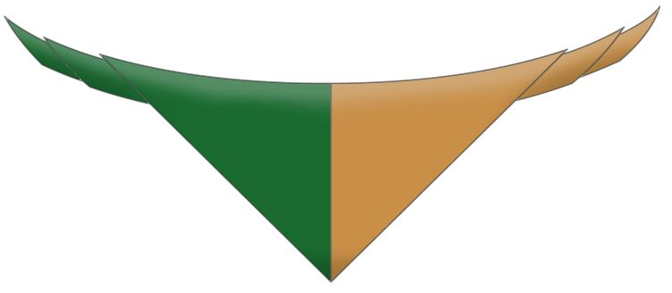

Our troop started in 1963 and is located in the Old Presbytery on the Lower Kilmacud Road (beside Bear Market ;) ).
Our neckerchief is green and gold (green is worn on the left).
We have two Beaver Sections, two Cub sections, two Scouts sections, a Venture section and a Rover Section.


Beaver Scouts are aged 6 to 8 years old and wear light blue jumpers. We have two beaver sections!
71st Beavers meet on Wednesdays from 6:30 to 7:30
62nd Beavers meet on Mondays from 6:30 to 7:30

Cub Scouts are aged 9 to 11 years old and wear navy jumpers.
62nd Cubs meet on Tuesday nights from 7:00 to 8:30
71st Cubs meet on Thursday nights from 7:00 to 8:30

Scouts are aged 12 to 14 and they are very active! They wear the Scout Shirt and participate in a lot of county and national events too.
62nd Scouts meet on Friday nights from 8:00 to 10:00
71st Scouts meet on Wednesday nights from 7:45 to 9:30
Check out the 62nd Scout's trip to Austria last summer!
The Scouts alternate annual camps between Ireland, Gillwell and further abroad!

Ventures are aged 15 to 17. They can start helping out in other sections at this age as well. Ventures doing Gaisce can also complete the Chief Scout Award for Ventures concurrently. They wear the Scout Shirt too!
Ventures meet on Thursday nights from 8:45 to 10:30

Rovers are aged 18 to 26 and do not have a designated meeting night. Most of our Rovers are leaders as well! (not a requirement though if ye want to tag along for the craic ;) )
Our leaders are an enthusiastic and passionate bunch :). We're always open to new leaders too.
| Group Leader: | Keith Lamon |
|---|---|
| 62nd Beaver Section Leader: | Enda Colfer |
| 71st Beaver Section Leader: | Meadhbh Ní Cleirigh |
| 62nd Cub Section Leader: | Cormac Doyle |
| 71st Cub Section Leader: | Matthew Pearse |
| 62nd Scout Section Leader: | Derek Kinsella |
| 71st Scout Section Leader: | Matthew Pearse |
| Venture Section Leader: | Keith Lamon |